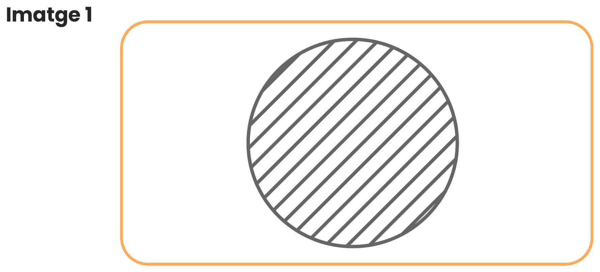
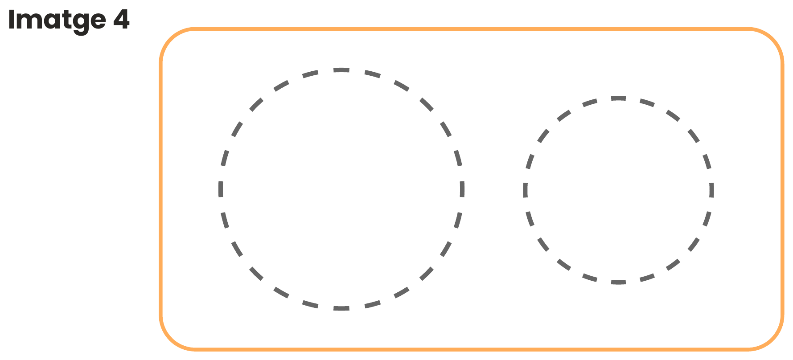
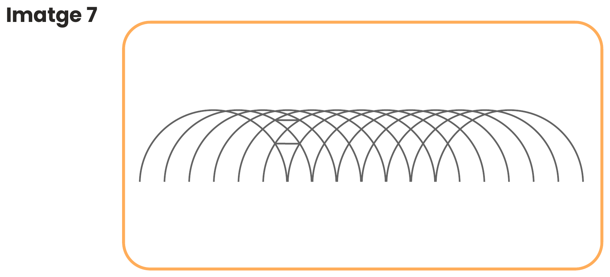
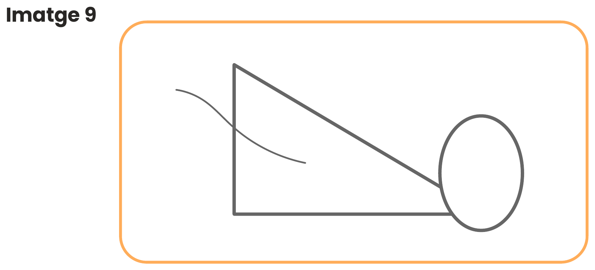
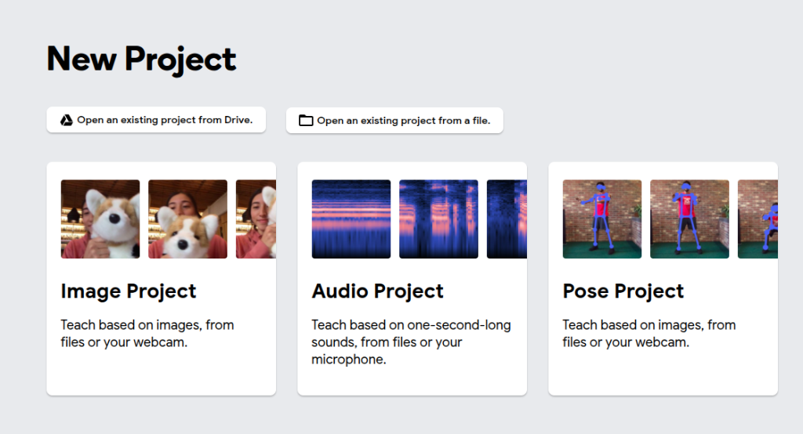

Què és la Intel·ligència Artificial i com aprèn?
Descobreix com els sistemes d'IA processen la informació, què és la IA generativa i com aprenen a partir de dades per generar respostes o reconèixer patrons visuals.
💡 Pluja d'Idees: Pensem com funciona
Debat inicialAbans d'entrar a la teoria, reflexiona sobre aquestes tres preguntes clau. Clica sobre cadascuna per veure la resposta que sorprendrà a més d'un!
❓ Quina diferència hi ha entre una IA tradicional i una IA generativa?
Clica aquí per descobrir-ho...
❓ Has vist mai una IA afirmar quelcom fals amb molta seguretat?
Clica aquí per descobrir-ho...
❓ Què condiciona més la resposta: com ho demanes o les dades que té?
Clica aquí per descobrir-ho...
🔄 Com s'entrena un model d'IA? Els 4 Passos Clau
FonamentsObserva aquest exemple sobre com s’entrena un model d’intel·ligència artificial per diferenciar entre gats i gossos:
Recull imatges etiquetades de gats i gossos
S’entrena amb una gran quantitat d’exemples (dades) que li serveixen de base.
Busca patrons que es repeteixen
Pot detectar que sovint els gats tenen les orelles més punxegudes i rectes, mentre que els gossos presenten una major varietat de formes a les orelles.
Prediu si la imatge és un gat o un gos
Compara la predicció amb la resposta correcta i ajusta el seu comportament per reduir l’error en casos semblants.
Decideix quina és la categoria: gat o gos
Combina totes les pistes que ha après i, quan li mostrem una foto nova que no havia vist mai, pren una decisió.
🎮 Simulador Interactiu: Entrena el teu primer model de Visió per Computador (Gats vs Gossos)
Laboratori Virtual d'IAViu en primera persona cadascuna de les 4 fases que segueix una xarxa neuronal convolucional real per aprendre a diferenciar animals. Navega pels 4 passos amb els botons o segueix el flux seqüencial:
Perquè un model d'intel·ligència artificial aprengui, primer necessita una matèria primera de qualitat: dades etiquetades per humans. Si li mostréssim només 3 fotos o si tots els gats fossin blancs i tots els gossos negres, la IA cometria l'error d'aprendre el color del pelatge en comptes de l'anatomia de l'animal.
Exemples reals de la col·lecció d'entrenament (Dataset):
Repte 1: Etiquetem dades com ho faria una IA
Descobreix el concepte de Human in the loop i resol el CAPTCHA oficial d'aula amb les 12 imatges. Observaràs per què els humans no sempre tenen criteris uniformes i com això afecta l'aprenentatge de la màquina.
👥 Human in the Loop: Les persones entrenen la IA
Concepte clauEls models d'intel·ligència artificial no es perfectedixen sols per màgia: requereixen intervenció humana contínua. Aquest procés s'anomena human in the loop (humans en el bucle).
Les persones revisen mostres, seleccionen les millors respostes, corregeixen errades i etiqueten imatges per tal que l'algorisme pugui ajustar els seus paràmetres i ser més precís.
🚦 Sabies què fas quan respons un CAPTCHA?
Quan selecciones tots els semàfors, passos de vianants, bicicletes o hidrants per demostrar que "no ets un robot", no només protegeixes un lloc web: estàs fent una microtasca d'etiquetatge gratuïta per entrenar models de visió per computador de vehicles autònoms i cercadors!
🧩 Repte 1 Oficial: Etiquetatge de 12 Imatges de Classe
Activitat Pràctica DocumentadaObserva cada imatge. Per a cadascuna, tens un temporitzador suggerit de 10 segons. Respon amb Sí o No a les tres preguntes obligatòries:

〰️ 1. Hi ha ratlles?
🔺 2. Hi ha triangles?
⭕ 3. Hi ha una rodona gran?
📋 Taula de Registre de Dades (Quadern Oficial):
Aquestes són les dades etiquetades pel teu equip. Es desen automàticament al teu navegador:
| Imatge | Hi ha ratlles? | Hi ha triangles? | Hi ha una rodona gran? | Estat |
|---|
🤔 Anàlisi de Casos Frontera i Discrepàncies de Criteri
Dades Comparatives Reals d'AnotacióA la guia docent s'explica que diverses imatges provoquen un desacord sistemàtic entre els alumnes: per exemple, un triangle tallat pel marge o que no està tancat, és realment un triangle? Quina mida mínima ha de tenir un cercle per ser considerat "gran"? Una ombra de degradat compta com a ratlla? A continuació tens la comparativa real de com respon la gent davant d'aquests casos límit:



🎯 Qüestionari d'Autoavaluació: Casos Frontera i Riscos a la IA (Autoavaluat)
4 Preguntes AutoavaluadesSelecciona la resposta correcta per a cadascuna de les 4 preguntes. Rebràs una explicació immediata i punts d'experiència pel teu diploma oficial:
Entrenem un model d'IA amb Teachable Machine
Aprèn pas a pas a utilitzar l'eina oficial Teachable Machine de Google, entrena un model amb poques dades (Repte 2) i millora'l aportant més varietat i volum de mostres (Repte 3).
🤖 Què és Teachable Machine de Google?
Eina Externa OficialTeachable Machine és una eina educativa desenvolupada per Google que permet entrenar models reals de xarxes neuronals de reconeixement d'imatges, sons o postures de manera visual i intuïtiva des del navegador, sense necessitat d'escriure codi.
El procés té tres etapes: crear les categories (classes), aportar fotografies (amb càmera web o fitxers) i prémer Train Model. Un cop entrenat, pots posar a prova el model en temps real!
🚀 Obrir Teachable Machine en una pestanya nova ↗
Pantalla inicial de Teachable Machine: Selecció d'un nou Image Project per començar.
📖 Guia Pas a Pas per l'Alumnat (Com fer l'activitat)
Instruccions de la Guia1. Crear el Projecte
Obre l'enllaç, selecciona Image Project i tria l'opció Standard image model.
2. Definir 3 Classes
Anomena les 3 categories d'objectes de l'aula: bolígraf, llapis i retolador.
3. Carregar dades Repte 2
Al Repte 2, puja només 1 imatge per classe (un dataset deliberadament pobre i limitat).
4. Entrenar i Provar
Clica Train Model. Després prova 3 variables: Canvi de fons, Canvi d'angle/distància i Objecte tapat.
📝 Quadern de Treball Digital: Registre Oficial de Proves
Autosave persistentRegistra les observacions del teu equip tal com demana el document de treball oficial. Aquestes dades es guarden automàticament i seran avaluades per generar el teu Diploma Final:
Repte 2: Proves amb el Model Inicial (1 foto per classe)
Prova 1. El Fons
Mostreu el mateix objecte davant un fons diferent (carpeta, paret...).
Prova 2. L'Angle o Distància
Girat, inclinat 45°, o més a prop/lluny de la lent.
Prova 3. Parcialment Tapat
Tapeu part de l'objecte amb la mà o un paper.
Repte 3: Perfeccionem el model ampliant el Dataset (5 fotos per classe)
Abans de reentrenar, verifica la Checklist de Qualitat de Dades:
✅ Checklist de Qualitat:
Per què s'equivoca la IA? Riscos, Biaixos i Prompts Eficaços
Comprèn que la IA no té consciència ni entén el món: genera respostes basant-se en probabilitats matemàtiques. Aprèn a detectar al·lucinacions, biaixos i a formular prompts precisos per evitar errors.
⚠️ Els 4 Grans Motius pels quals la IA s'Equivoca
Comprendre l'error1. Càlcul Probabilístic
La IA no comprèn els conceptes com un humà. Tria la paraula o píxel més probable. Pot construir mentides molt ben redactades.
2. Dades Esbiaixades
Si les dades d'entrenament contenen estereotips o manques històriques, el model els reprodueix i fins i tot els amplifica.
3. Falta de Context
Quan fem una pregunta ambigua o sense límits, la màquina omple els buits inventant dades o prenent dreceres errònies.
4. Informació Caducada
Els models només saben allò amb què s'han entrenat fins a la seva data de tall, si no tenen accés a eines de cerca externa.
🕵️ Joc de Pensament Crític: Detecta l'Al·lucinació i el Biaix
Repte de VerificacióAquí tens 3 casos reals on la IA respon amb un to de màxima seguretat i convenciment, però amaga un error greu. Identifica quin és el problema a cada cas:
Quin problema té aquesta resposta?
Quin problema hi ha aquí?
Quin problema hi ha aquí?
⚖️ Balanç Ètic: Avantatges vs Inconvenients de la IA
Impacte Social i Mediambiental🌟 Grans Avantatges i Oportunitats
- Automatització de tasques repetitives: Classificar dades, filtrar fitxers o corregir codi.
- Suport a la creativitat: Pluja d'idees, primers esborranys, traducció i resums.
- Avanços científics i mèdics: Diagnòstics precoços d'imatges mèdiques i models com AlphaFold.
- Accessibilitat: Subtitulació en temps real, lectors per a invidents i adaptació de textos.
⚠️ Riscos i Inconvenients Reals
- Pèrdua de pensament crític: Dependència excessiva i acceptar respostes sense contrastar.
- Desinformació i Deepfakes: Creació de fotos, vídeos i veus falses per suplantar identitats.
- Consum energètic i d'aigua: Els servidors d'IA consumeixen quantitats gegantines d'electricitat i recursos.
- Drets d'autor i privadesa: Ús d'obres d'artistes i dades personals sense consentiment per entrenar models.
🧠 L'Art d'Escriure un Prompt: Com donar instruccions a la IA sense que al·lucini
Pauta Oficial de la UnitatUn prompt és l'encàrrec o conjunt d'instruccions que donem a la intel·ligència artificial. Com hem vist al llarg de la unitat, la IA és un sistema probabilístic basat en predicció de patrons; si li donem un missatge incomplet o ambigu (com "Parla'm de la història"), la màquina ha de "completar els buits" inventant dades, divagant o reproduint tòpics i biaixos. Segons la guia docent, per evitar al·lucinacions i obtenir resultats útils, fiables i precisos cal dominar els 4 components indispensables:
1. L'Objectiu Clar (Task / Goal)
Què vols que faci exactament? Defineix la tasca sense ambigüitats (analitzar, sintetitzar, comparar, esquematitzar) i assigna-li un rol professional expert.
2. El Context i Públic (Audience)
A qui va adreçat i per a què servirà? La IA adaptarà el vocabulari, la complexitat i el to segons si és per a un infant, un examen de secundària o un article científic.
3. El Format i Extensió (Format)
Com vols que s'estructuri la resposta? Exigeix una disposició visual concreta (taula, punts clau numerats, cronologia) i marca un límit de paraules per evitar paràgrafs densos.
4. Els Límits i Restriccions (Guardrails)
Què ha d'evitar i quines són les línies vermelles? És l'escut indispensable contra les al·lucinacions: prohibeix inventar dades dubtoses i exigeix neutralitat estricta.
➔ Què farà la IA? Generarà un text genèric, llarg, desordenat, sense públic objectiu i amb risc elevat d'opinions esbiaixades o dades inventades.
➔ Què farà la IA? Respondrà exactament el que necessites amb màxim rigor acadèmic i zero al·lucinacions.
🎯 Laboratori de Prompts: Com formular el millor encàrrec?
Missió Pràctica Obligatòria (100% Requerit)La teva missió escolar: Treball sobre la Guerra Civil Espanyola
Imagina que el professorat de Ciències Socials / Història us demana preparar una presentació sobre la Guerra Civil Espanyola (1936-1939). No volem que la IA us faci el treball, sinó que us proporcioni una guia d'estudi rigorosa i sintètica. Has de redactar a continuació cadascun dels 4 components aplicats a aquest tema. Cal escriure com a mínim 8 paraules detallades a cada camp per assolir el 100% de qualitat i poder desbloquejar el qüestionari final!
📊 Qualitat del teu Prompt:
0 / 100%Encàrrec complet generat:
Qüestionari Teòric Final: Demostra el que has après
Respon les 10 preguntes oficials de la unitat didàctica. Els encerts determinen la teva nota final sobre 10 i la valoració de competències del teu Diploma Oficial.
📝 Test d'Aprofitament (10 preguntes)
Enhorabona! Has completat la Càpsula Didàctica
Aquí tens el teu Diploma Oficial d'Aprofitament amb la valoració personalitzada de punts forts assolits i aspectes clau a millorar. Pots descarregar-lo en imatge o imprimir-lo en PDF!
DIPLOMA D'APROFITAMENT
UNITAT DIDÀCTICA: COM APRÈN UNA IA? · TECNOLOGIA I DIGITALITZACIÓ ESO
Es certifica oficialment que l'alumne/a o equip de treball:
Ha superat satisfactòriament les activitats d'aprenentatge sobre models d'IA generativa, l'anàlisi de l'etiquetatge humà (CAPTCHA), l'entrenament supervisat amb Teachable Machine i la formulació de prompts crítics.
🌟 Punts Forts i Competències Assolides
🌱 Aspectes a Millorar i Recomanacions
📋 Dossier d'Avaluació i Resum d'Activitats de l'Alumnat
Informe d'activitats per a l'anàlisi docent: recull totes les respostes, proves experimentals i reflexions de la unitat.